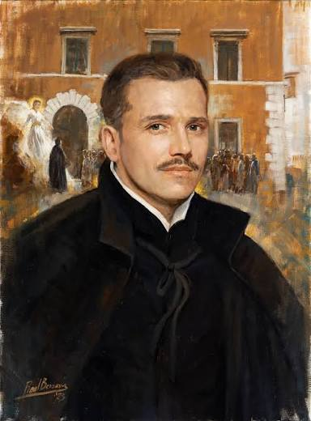

Conociendo su historia
¿Quién fue?
Glicerio Landriani (1588–1618) fue un joven noble italiano que renunció a su riqueza y a una prometedora carrera en la corte papal para convertirse en uno de los primeros colaboradores de San José de Calasanz en las Escuelas Pías. Tras vivir una juventud rodeada de lujos en Roma, experimentó una profunda conversión espiritual al ver la miseria de los niños de la calle, lo que lo llevó a ingresar a la orden escolapia en 1612.
Su historia refleja el poder de un giro radical y humano: cómo la verdadera grandeza no está en los títulos ni en los bienes materiales, sino en la capacidad de transformar el propio destino por amor y servicio a los demás. Al despojarse de sus privilegios para convertirse en maestro de los más olvidados, su vida se transformó en un testimonio de compasión universal y en un modelo pedagógico basado en el afecto y la paciencia. Fallecido prematuramente a los 29 años y declarado Venerable en 1931, su legado sigue vivo hoy como el gran referente y patrono de los jóvenes del Movimiento Calasanz.

¡Poné a prueba tus conocimientos!
¿Cuánto sabés sobre Glicerio Landriani?
Seleccioná una respuesta para cada pregunta y después comprobá tu resultado.
1. ¿En qué ciudad nació Glicerio?
RomaMilán
Florencia
2. ¿En qué año nació?
15881612
1618
3. ¿En qué ciudad murió?
MilánRoma
Venecia
4. ¿Con quién colaboró Glicerio?
San José de CalasanzPedro Casani
Federico Borromeo
5. ¿En qué año fue declarado Venerable?
18951931
1618